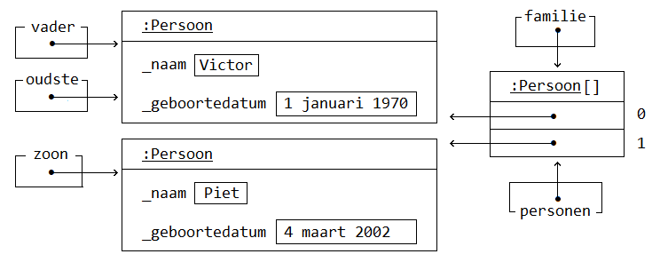

Programmeren Basis - Deel 14¶
1. Objecten¶
Vaak werken we in de code met objecten. Objecten bundelen zaken die conceptueel samen horen, bijvoorbeeld:
-
informatie die bij een persoon hoort, bijvoorbeeld zijn naam, adres of geboortedatum
-
functionaliteit die met of op dat persoon object van toepassing is, bijvoorbeeld adres wijzigen, leeftijd berekenen, initialen bepalen, …
Objecten zijn steeds van een bepaald (data)type, en worden ook wel eens een instantie van dat type genoemd. Een object zou bijvoorbeeld een instantie kunnen zijn van een type als Persoon, Random of string.
Een datatype als Persoon zou je zelf moeten definiëren, daar hebben we het straks over. Tot dus ver hebben we vooral gewerkt met instanties van voorgedefinieerde datatypes.
Voorbeeld van objecten van voorgedefinieerde datatypes
Objecten naam, familienaam of randomGenerator houden informatie bij over twee teksten (van type string), of een getal generator (van type Random).
string naam = "Jan";
string familienaam = "Janssens"
Console.WriteLine($"Naam (in hoofdletters): {naam.ToUpper()}");
Random randomGenerator = new Random();
Console.WriteLine($"Willekeurig getal: {randomGenerator.Next(1, 11)}");
Niet alleen houden ze informatie over deze tekst of getal generator bij, ze staan ook nog eens toe daarmee of daarop handelingen toe te passen.
Zo kan je van deze tekst naam met de ToUpper method een hoofdletter-representatie opvragen.
Zal de Next method het volgende willekeurige getal van deze generator randomGenerator opleveren.
Opmerking: Dot notatie
Voor de dot staat de naam van het object waarmee wordt gewerkt, waarvan bijvoorbeeld informatie wordt opgeleverd.
naam.ToUpper()zal van de tekst in variabelenaam, en bijvoorbeeld niet van de tekstfamilienaam, een hoofdletter-reprenstatie opleveren.
Straks willen we ook met objecten van onze eigen datatypes gaan werken. Bijvoorbeeld objecten van type Persoon.
Voorbeeld van objecten van zelfgedefinieerde datatypes
Ook deze objecten moeten informatie bijhouden, bijvoorbeeld de naam of geboortedatum van de persoon die met dat object wordt voorgesteld.
Op die Persoon objecten willen we echter graag ook bepaalde handelen uitvoeren…
We zijn geïnteresseerd in het Persoon object met de hoogste Leeftijd. Van die Persoon willen we graag de naam opvragen. Een method als GetNaam zou ons die naam moeten opleveren.
De Persoon objecten zouden elk een naam en geboortedatum moeten krijgen, bijvoorbeeld via methods als SetNaam en SetGeboortedatum.
class Program {
static void Main() {
DateTime geboorteDatum1 = new DateTime(1970, 1, 1);
DateTime geboorteDatum2 = new DateTime(2002, 3, 4);
Persoon vader = new Persoon();
vader.SetNaam("Victor"); // (1)
vader.SetGeboortedatum(geboorteDatum1); // (1)
Persoon zoon = new Persoon();
zoon.SetNaam("Piet");
zoon.SetGeboortedatum(geboorteDatum2);
Persoon[] familie = new Persoon[2];
familie[0] = vader;
familie[1] = zoon;
Persoon oudste = Oudste(familie);
Console.WriteLine($"De oudste persoon is: {oudste.GetNaam()}"); // (2)
}
static Persoon Oudste(Persoon[] personen) {
Persoon oudste = null;
if (personen.Length > 0) {
// We veronderstellen dat de eerste persoon de oudste is...
oudste = personen[0];
// En bekijken vanaf het tweede element of er sprake is van nog een oudere...
for (int i = 1; i < personen.Length; i++) {
// Vervang indien zo de tot-nu-toe-oudste door de persoon in kwestie...
if (personen[i].Leeftijd() > oudste.Leeftijd()) { // (3)
oudste = personen[i];
}
}
}
return oudste;
}
}
-
Instellen van de naam (
SetNaam) of geboortedatum (SetGeboortedatum). -
Opvragen van de naam via
GetNaam. -
Opvragen van de leeftijd via
Leeftijd.
Zo meteen bespreken we hoe we dergelijk eigen datatype als Persoon kunnen creëren.
Samengevat…
Een object bevindt zich in een bepaalde toestand. Deze toestand wordt bepaald door de informatie die door dat object wordt bijgehouden. Bijvoorbeeld de tekst in een string object, of de naam en de geboortedatum in een Persoon object.
Daarnaast vertoont een object gedrag. Meer specifiek kan een object vragen beantwoorden of opdrachten uitvoeren. Bijvoorbeeld kan een string object antwoorden op de vraag wat zijn hoofdletter-representatie is, of kan een Persoon object zijn leeftijd opleveren.
2. Klasse, datavelden en methods¶
Een (data)type kan worden gedefinieerd aan de hand van een klasse.
Een klasse (Engels: class) is een voorschrift van wat voor informatie alle objecten van die klasse kunnen bijhouden, en welke functionaliteiten ze kunnen uitvoeren.
-
Aan de hand van datavelden (variabelen op klasseniveau) wordt het mogelijk gemaakt informatie bij te houden.
-
Methods (commando’s of queries) worden gebruikt om functionaliteit te voorzien.
Voorbeeld van een eigen klasse
Elk object van het type Persoon zal zijn eigen naam en geboortedatum kennen.
Van elk Persoon object kan je de naam en geboortedatum instellen en opvragen.
Daarnaast is het ook mogelijk van elk Persoon object de Leeftijd na te gaan.
class Persoon {
private string _naam; // (1)
public string GetNaam() {
return _naam;
}
public void SetNaam(string naam) {
_naam = naam;
}
private DateTime _geboortedatum; // (2)
public DateTime GetGeboortedatum() {
return _geboortedatum;
}
public void SetGeboortedatum(DateTime geboortedatum) {
_geboortedatum = geboortedatum;
}
public int Leeftijd() {
int leeftijd = 0;
DateTime dt = GetGeboortedatum().Date.AddYears(1);
while (dt <= DateTime.Today) {
leeftijd++;
dt = dt.AddYears(1);
}
return leeftijd;
}
}
-
een dataveld
_naam -
een dataveld
_geboortedatum
We hebben twee datavelden (soms ook gewoon velden genoemd) voor het bijhouden van de toestand van onze verschillende Persoon instanties:
-
_naamvan typestringvoor het bijhouden van de naam -
_geboortedatumvan typeDateTimevoor het bijhouden van de geboortedatum
Merk op dat dit variabelen zijn die niet in een method, maar rechtstreeks in een klasse worden gedeclareerd.
Typisch ga je het sleutelwoord private terugvinden op die declaratieregel. Zo meteen iets meer over die private.
Opmerking: Underscore voor datavelden
Doorgaans worden de namen van datavelden met een underscore gestart. Het voordeel is dat je zo meteen ook ziet (aan het al dan niet starten met een underscore) of het over een dataveld of een gewone lokale variabele.
We beschikken ook vijf methods.
Twee daarvan zijn commando’s (void methods) die de toestand van een Persoon object kunnen manipuleren:
-
SetNaamvoor het instellen van de naam -
SetGeboortedatumvoor het instellen van de geboortedatum
En we hebben ook drie queries die de toestand, of een afgeleide toestand, kunnen opleveren:
-
GetNaamvoor het opvragen van de naam -
GetGeboortedatumvoor het opvragen van de geboortedatum -
Leeftijdvoor het opvragen van de leeftijd
Get of Set prefix¶
De Get en Set prefixen worden gebruikt om te benadrukken dat het gaat om het opvragen (getten) of instellen (setten) van een bepaalde eigenschap. De naam en de geboortedatum kan je als een 'eigenschap' van een persoon bekijken.
Vooral indien je zowel voorziet in de mogelijkheid eigenschappen op te vragen als in te stellen, zijn deze prefixen zinvol. Ze benadrukken extra dat het gaat om het getten of setten van een waarde.
Opmerking: Bij properties laten we die vallen.
Verderop (in een volgend deel van het cursusmateriaal) werken we voor elke eigenschap met een zogenaamde property.
Eén property (met één naam) kan de mogelijkheid bieden de eigenschap zowel in te stellen als op te vragen. Vanaf dan laten we de Get of Set prefixen meestal vallen.
Zolang we nog niet aan de slag gaan met properties, maken we vrij vaak gebruik van deze prefixen. Maar het hoeft enkel indien het zinvol is te benadrukken dat het gaat om getten of setten.
Omdat in dit voorbeeld de leeftijd enkel opvraagbaar is, biedt een Get prefix hier weinig meerwaarde.
Namen van klassen starten met een hoofdletter¶
Net als de namen van methods gaan we telkens de namen van klassen starten met een hoofdletter. Upper CamelCasing (zoals men dat wel eens noemt) is hier van toepassing.
2.1. Gedrag en toestand¶
We zouden de verschillende onderdelen (members) van een klasse in volgend overzicht kunnen plaatsen…

In dit overzicht staat het begrip toestand centraal. Zoals reeds aangegeven wordt de toestand bepaald door de informatie die door dat object wordt bijgehouden.
Vraag je je af welke datavelden in een klasse moeten worden voorzien? Of dus welke toestand objecten van dit type kunnen aannemen?
Stel jezelf dan de vraag in wat twee verschillende instanties van dit type kunnen verschillen?
Elke Persoon kan een eigen naam hebben, en een eigen geboortedatum.
Die dus anders is dan de naam of geboortedatum van een ander Persoon object.
Of nog beter, denk na over wat elk object moet weten (bijhouden) om elke vraag (query) te kunnen antwoorden.
Om te antwoorden op de vragen:
-
wat is de naam van deze persoon (
GetNaam) -
wat is zijn geboortedatum (
GetGeboortedatum) -
wat is zijn leeftijd (
Leeftijd)
Moet elk object minstens beschikken over de kennis
-
wat de naam is, dit geeft ons
string _naamwant daarmee kan het gedrag vanGetNaamvervuld worden -
wat de geboortedatum is, dit geeft ons
string _geboortedatumwant daarmee kanGetGeboortedatumenLeeftijdvervuld worden
Op basis van het gewenste gedrag beslis je welke toestand objecten van een bepaalde klasse kunnen aannemen.
Of anders uitgedrukt: je voorziet voldoende datavelden om te kunnen voldoen aan het gedrag dat de methods moeten implementeren.
2.2. Terminologie¶
Het woord 'klasse' of 'class' heeft verschillende betekenissen. Hier in deze context bedoelen we zoiets als 'classificatie' (of noem het soort of categorie). Objecten met dezelfde eigenschappen, horen tot dezelfde categorie.
Het woord 'object' heeft ook veel betekenissen. Wij bedoelen in deze context 'exemplaar'. Een instantie (één object) van type string stelt één tekst voor. Een ander object van type string (een andere instantie dus), stelt een ander exemplaar van deze klasse voor, een andere tekst dus.
Laat je niet teveel in de war brengen, simpel gesteld…
-
klasse = class = (data)type = categorie
-
object = instantie = exemplaar
2.3. Private en public¶
Members van een klasse (onderdelen als datavelden of methods) hebben een bepaalde visibility (Nederlands: zichtbaarheid).
Deze visibility bepaalt waar deze members kunnen gebruiken:
-
publiczaken kunnen elders in ons programma aanspreken, ook buiten de klasse waarin ze zijn gedefinieerd.De
publicmethods van klassePersoonkunnen bijvoorbeeld in eenMainmethod van eenProgramklasse worden benaderd. -
privatezaken kunnen enkel in de klasse zelf gebruikt worden.De datavelden van een
Persoonobject kunnen we enkel in de klassePersoonzelf gebruiken. Het is niet mogelijk om deze bijvoorbeeld in een method van een andere klasse aan te spreken.
Vergelijk het een beetje met de scope van een variabele. Deze beperkte ook de plaatsen in de code waar we die variabelen konden gebruiken.
Opmerking: Datavelden zijn private.
Datavelden worden doorgaans niet beschikbaar gesteld buiten de klassen waarin ze zijn gedefinieerd. Visibility
privategaat dit verhinderen.
2.4. Een nieuwe klasse toevoegen in Visual Studio¶
Elke klasse wordt doorgaans in een apart broncode document geplaatst.
Toevoegen van een broncode document aan je Visual Studio project
Indien je in je project naast een Program klasse ook een Persoon klasse wil toevoegen kies je in de Visual Studio menu voor Project › Add Class ……

In het resulterende 'Add New Item' venster selecteer je de Class template.

Als broncode bestandnaam kan je kiezen voor iets als Persoon.cs. Klik op de Add knop.
Opmerking: Klassenaam als bestandsnaam
Het is altijd een goed idee om je broncode document dezelfde naam te geven als de klasse die erin is gedefinieerd.
Zo kan je bijvoorbeeld makkelijk in een toolvenster als de Solution Explorer je definitie terugvinden.
Op basis van de uitgekozen bestandsnaam zal een klasse met -in dit geval- de naam Persoon worden toegevoegd.

In je project zitten nu alvast twee broncode documenten.
Vervang de meegegeven class Persoon door onze eigen versie die we daarstraks hadden uitgeschreven.
3. Objecten aanmaken met new¶
Objecten van onze eigen (of voorgedefinieerde) klassen kunnen we aanmaken met new.
Het sleutelwoord new laat je volgen door de naam van het datatype (de klasse) die je wil instantiëren. Na de naam van het datatype staan ronde haakjes, bijvoorbeeld new Persoon() of new Random().
Dergelijke object initializer maakt het object/de instantie aan (reserveert hiervoor geheugen), en levert de verwijzing (de referentie) naar dit object op. Typisch ga je meteen de opgeleverde verwijzing toekennen aan een variabele van corresponderend datatype, bijvoorbeeld…
Door de verwijzing in een variabele op te slaan kun je het object via die variabele gebruiken, bijvoorbeeld…
Opmerking
Van één klasse kan je oneindig veel objecten maken. De klasse is als het ware de moule, de objecten zijn dan de afgietsels.
3.1. Reference type en null¶
Net als het string datatype, of array datatypes, zijn ook klasse datatypes reference types.
Dat maakt dat er een verschil is tussen de instantie enerzijds, en de opslagplaats (variabele of array-slot bijvoorbeeld) anderzijds.
Indien de referentie aan de opslagplaats is toegekend, verwijst hij naar het object. Bijvoorbeeld weergegeven met de pijltjes in onderstaande sectie over objectdiagrammen.
Is er niets toegekend aan deze opslagplaats dan bevat hij null. Indien bijvoorbeeld een variabele als p louter wordt gedeclareerd, maar nooit een waarde krijgt toegekend (Persoon p;) dan bevat hij null.

Je kan null ook expliciet aan een variabele toekennen, bijvoorbeeld Persoon p = null, maar dat gebeurt niet zo vaak. Zoals we straks zien, ga je dat soms wel doen om een "Use of unassigned local variable" compilefout te vermijden.
3.2. Source code en run-time constructie¶
Het is belangrijk dat je je realiseert dat een klasse en een object op twee verschillende momenten relevant zijn.
Een klasse is een source code constructie, en is met andere woorden enkel relevant voor de compiler, of dus VOOR de uitvoering begint.
Een object is dan een run-time constructie, en is enkel relevant NADAT de uitvoering begint.
4. Instance methods oproepen¶
Bij elk Persoon object kunnen we diens methods oproepen, bijvoorbeeld de Set- en GetNaam methods…
Voorbeeld aanroepen van instance methods
Van de klasse Persoon zouden we twee objecten kunnen maken. Eén om daarmee Jan voor te stellen, geboren op 1 januari 2000. En één om een persoon voor te stellen met de naam Piet, geboren op 4 maart 2002.
DateTime geboorteDatum1 = new DateTime(2000, 1, 1);
DateTime geboorteDatum2 = new DateTime(2002, 3, 4);
Persoon p1 = new Persoon();
p1.SetNaam("Jan");
p1.SetGeboortedatum(geboorteDatum1);
Persoon p2 = new Persoon();
p2.SetNaam("Piet");
p2.SetGeboortedatum(geboorteDatum2);
if (p1.Leeftijd() > p2.Leeftijd()) {
Console.Write($"{p1.GetNaam()} is ouder dan {p2.GetNaam()}."); // (1)
}
- Jan is ouder dan Piet.
De variabelen p1 en p2 bevatten elke een verwijzing (een referentie) naar een instantie van type Persoon.
Merk op dat de SetNaam en GetNaam methods van precies dat Persoon object worden aangeroepen waar de variabele p1 of p2 naar verwijst!
Bij de method oproep staat links naast de methodnaam een expressie (met een punt ertussen). Die expressie duidt het object aan wiens method we oproepen.
Zo is het van p1 dat de naam op "Jan" wordt ingesteld (p1.SetNaam("Jan")). Vragen we vervolgens de naam van p1 op (p1.GetNaam()) dan levert ons dat "Jan", en bijvoorbeeld niet "Piet" (de naam van p2).
4.1. Objectdiagrammen¶
We zouden de toestand van onze twee objecten ook met volgend objectdiagram kunnen modelleren…

Het objectdiagram benadrukt nogmaals dat elk object van type Persoon hier zijn eigen naam en geboortedatum kan hebben.
In een objectdiagram stelt een vierkant een object voor. Dit is een object van het type waarvan de naam in het bovenste compartiment na de dubbelpunt is weergegeven. Dit datatype wordt typisch onderlijnd, bijvoorbeeld :Persoon.
We krijgen ook de waardes van de datavelden te zien.
De naam van de variabele die de verwijzing naar een object bevat, kun je ook links van de dubbele punt zetten bovenin het object rechthoekje. In de cursus opteren we er liever voor om een pijl te laten vertrekken vanuit een apart vierkantje dat de variabele voorstelt. Door die pijl valt het beter op dat de variabele een verwijzing bevat. De naam van de variabele schrijven we dan bovenaan het vierkantje (p1 en p2 hierboven)
Verderop komen de pijltjes goed van pas, zeker als we meerdere variabelen naar hetzelfde object laten wijzen!
4.2. Instance methods versus class methods¶
4.2.1. Object gerelateerde method¶
Een method waar geen static voor staat noemen we een instance method of object (related) method. We hebben er ondertussen zelf gecreëerd, bijvoorbeeld Set- en GetNaam uit de Persoon klasse.
Deze methods worden altijd op een object aangeroepen. Voor de dot staat de naam van het object waarmee wordt gewerkt. Bijvoorbeeld p2.SetNaam("Piet"), de object expressie p2 maakt hier duidelijk dat de naam van die persoon wordt ingesteld.
Ook van voorgedefinieerde instance methods hebben we voorheen reeds gebruik gemaakt.
Voorbeeld van instance methods
class Program {
static void Main() {
string s = "Hello World!";
Factuur f = new Factuur();
f.SetVervaldatum(dt); // (1)
Console.WriteLine(s.ToUpper()); // (1)
Console.WriteLine(f.GetVervaldatum()); // (1)
}
}
class Factuur {
private DateTime _vervaldatum;
public void SetVervaldatum(DateTime vervaldatum) { // (2)
_vervaldatum = vervaldatum;
}
public DateTime GetVervaldatum() { // (2)
return _vervaldatum;
}
}
-
We roepen instance methods
SetVervaldatum,ToUpperofGetVervaldatumaan op objecten van typeFactuurenstring. -
Merk op dat er geen
staticsleutelwoorden in de hoofding van de methodsSetVervaldatumenGetVervaldatumwordt vermeld.
Probeer maar eens uit wat er gebeurt wanneer je een static sleutelwoord zou toevoegen in de definitie van bijvoorbeeld de GetVervaldatum method. De compiler levert ons de foutmelding "Member 'Factuur.GetVervaldatum()' cannot be accessed with an instance reference; qualify it with a type name instead".
Ook in de implementatie van de GetVervaldatum method zelf zou een compilefout optreden: "An object reference is required for the non-static field … _vervaldatum ".
Het dataveld _vervaldatum is inderdaad non-static, of noem het instance related. Het is gekoppeld aan het object in uitvoering.
Opmerking: Weinig parameters in instance methods.
Merk op dat bij instance methods typisch weinig parameters word gebruikt.
Op basis van het object waarop de member wordt aangeroepen is immers reeds duidelijk wat de informatie is waarmee wordt gewerkt.
Het volstaat bijvoorbeeld voor de dot naar
ste verwijzen als je van dezestringde hoofdletter representatie wenst op te vragen (s.ToUpper()). Tussen haakjes moet je bij het aanroepen vanToUpperdan ook geen parameterwaardes voorzien.
4.2.2. Klasse gerelateerde method¶
Er zijn ook methods die niet bij objecten horen, namelijk de class methods. Deze methods worden ook wel klasse (gerelateerde) methods genoemd, in tegenstelling dus tot de object (gerelateerde) methods.
Deze class methods kan je herkennen aan het static sleutelwoord in de hoofding van deze method. De Main method bijvoorbeeld is een class method, en dus geen instance method.
Voorheen hebben we reeds intensief deze class methods ingezet. Nogmaals: daar was geen object nodig om deze method op aan te roepen.
Voorbeeld van static methods
static void Main() {
Console.WriteLine(Math.Sqrt(25)); // (1)
Console.WriteLine(char.ToLower('A')); // (1)
PrintHelloWorld(); // (1)
}
static void PrintHelloWorld() { // (2)
Console.WriteLine("Hello World!");
}
-
We roepen methods
WriteLine,Sqrt,ToLowerofPrintHelloWorldaan zonder dat deze op een object van toepassing is. -
Merk op dat het
staticsleutelwoord in de hoofding van deze method is vermeld.
Probeer maar eens uit wat er gebeurt wanneer je het static sleutelwoord zou verwijderen in de definitie van de PrintHelloWorld method. De compiler levert ons de foutmelding "An object reference is required for the non-static method 'PrintHelloWorld()' …". Indien de method non-static zou zijn, of met andere woorden een instance method, dan zou inderdaad een verwijzing naar een object (object reference) noodzakelijk zijn.
In het geval van de WriteLine, Sqrt en ToLower methods, zetten we voor de dot de naam van de klasse waarin deze method is gedefinieerd. Voor het oproepen van PrintHelloWorld is dat niet noodzakelijk, daar roepen we deze method op vanuit dezelfde klasse als waarin ze is gedefinieerd.
Opmerking: Meer parameters in static methods.
Merk op dat bij
staticmethods typisch meer parameters worden ingezet. Dit om duidelijk te maken wat de waardes zijn waarmee wordt gewerkt.We geven bij het aanroepen van
Console.WriteLine,Math.Sqrtofchar.ToLowertelkens een parameterwaarde mee. Respectievelijk de waarde die op de console wordt gedrukt, de waarde waarvan de vierkantswortel wordt opgeleverd, of het karakter waarvan de kleine letter variant wordt opgeleverd.
4.3. this¶
Voorheen hebben we benadrukt dat elke instance methods van toepassing is op een bepaald object. Sterker nog bij het aanroepen van die instance method hebben we voor de dot telkens verwezen naar het object in kwestie. Merk in volgend voorbeeld op dat we dat ook kunnen doen…
-
Bij het aanspreken van een dataveld.
-
Indien we die method aanroepen in de klasse zelf.
Daar kunnen we bij wijze van de this object expressie verduidelijken op welk object die member van toepassing is. this zal als object expressie steeds wijzen naar het object in uitvoering.
Voorbeeld van het gebruik van this
Van Persoon objecten kan je hier niet alleen de naam instellen en opvragen, maar ook de initialen bevragen.
Zowel bij het aanspreken van het _naam veld, als de GetNaam() method, wordt verduidelijkt dat het gaat om het object in uitvoering (this).
class Program {
static void Main() {
DateTime geboorteDatum1 = new DateTime(2000, 1, 1);
DateTime geboorteDatum2 = new DateTime(2002, 3, 4);
Persoon p1 = new Persoon();
p1.SetNaam("Jean-Jacques Peters");
Console.WriteLine(p1.Initialen()); // JJP (1)
Persoon p2 = new Persoon();
p2.SetNaam("Rita Sanders");
Console.WriteLine(p2.Initialen()); // RS (2)
}
}
class Persoon {
private string _naam;
public string GetNaam() {
return this._naam; // (3)
}
public void SetNaam(string naam) {
this._naam = naam; // (3)
}
public string Initialen() {
string initialen = "";
char[] splitsKarakters = { ' ', '-' };
string[] naamDelen = this.GetNaam().Split(splitsKarakters); // (4)
foreach (string naamDeel in naamDelen) {
initialen += naamDeel.Substring(0, 1);
}
return initialen;
}
}
-
Bij de eerste call naar
Initialenisp1het object in uitvoering. -
Bij de tweede call naar
Initialenisp2het object in uitvoering. -
Voor het aanspreken van het dataveld
_naamwordt benadrukt dat het gaat om dat object (in uitvoering). -
Ook bij het aanroepen van
GetNaamwordt dat expliciet aangegeven.
Het voorbeeld zou net zo goed werken zonder this.
Het gebruik ervan kan echter geen kwaad. Je benadrukt ermee dat je gebruik maakt van een member (dataveld of method) van de klasse zelf.
4.3.1. Underscore voor datavelden¶
Het gebruik van this is niet verplicht, al zeker niet indien er geen verwarring mogelijk is! Had het dataveld echter naam genoemd, zonder underscore, dan kan je je allicht inbeelden dat er bepaalde onduidelijkheid is.
class Persoon {
private string naam; // (1)
public void SetNaam(string naam) {
naam = naam; // Niet zinvol! (2)
}
...
}
-
Merk op dat dit dataveld exact hetzelfde noemt als de parameter van de
SetNaammethod. -
De
naamvariabele links van de toekenningsoperator=wijst, net alsnaamrechts van die operator, naar de parameter, en niet naar het dataveld.
Dergelijk implementatie (naam = naam;) zou bijgevolg geen zinvol resultaat opleveren. Wat we dan weer kunnen oplossen door this. voor de target te vermelden…
class Persoon {
private string naam;
public void SetNaam(string naam) {
this.naam = naam; // (1)
}
...
}
this.naammoet wel naar een member verwijzen van het object in uitvoering, hier dus hetnaamdataveld.
Hoewel het werken met this extra duidelijkheid kan verschaffen is het gebruik ervan bijna nooit noodzakelijk. Zeker niet wanneer je elke veldnaam met een underscore laat starten…
class Persoon {
private string _naam; // (1)
public void SetNaam(string naam) {
_naam = naam; // (2)
}
...
}
-
Merk op dat de naam van het dataveld nu opnieuw start met een underscore.
-
_naamwijst naar het dataveld.
Je zou van _naam this._naam kunnen maken, maar echt noodzakelijk lijkt het niet. De code is zo best duidelijk.
5. NullReferenceException¶
Wat gebeurt er indien we een instance method aanroepen zonder dat er sprake is van object? Een situatie die wel eens voorvalt wanneer we "vergeten" een object aan te maken.
- Deze regel, die de instantie aanmaakt, en de variabele opvult, vergaten we op te nemen.
Dan treedt een NullReferenceException op, met de bijkomende boodschap "Object reference not set to an instance of an object.".
Deze error betekent dat er geprobeerd werd een instance method op te roepen zonder object. Dat wil zeggen dat de method werd aangeroepen op een object expressie die tijdens de uitvoering null blijkt te zijn.
Opmerking: Use of unassigned local variable.
Indien in voorgaande code
peen lokale variabele zou zijn, en we dep = null;regel verwijderen, krijgen we de foutmelding: "Use of unassigned local variable."
Het voordeel is dat we hiermee worden gewaarschuwd voor de mogelijke
NullReferenceException.Deze waarschuwing komt er enkel bij gewone lokale variabelen. Zoals we verderop gaan zien, zou het bijvoorbeeld ook kunnen dat je vergat een dataveld, of array-slot op te vullen. In dat geval krijg je die foutmelding niet te zien.
Om het optreden van die exception nu reeds te kunnen illustreren, kunnen we de unassigned local variable foutmelding omzeilen met de
p = null;regel.

Je zult de NullReferenceException nog heeeeeeeeeel vaak tegenkomen in de komende jaren, jullie worden vast goeie vrienden ;)
Maar geen paniek dus, het wijst er je gewoon op dat je ergens in de code een object vergeet aan te maken, of op te halen.
6. Volwaardig datatype¶
Elke klasse introduceert een nieuw (volwaardig) datatype in ons programma.
Een klasse datatype kan gebruikt worden als type voor lokale variabelen, datavelden, array-elementen, parameters, return values, enzovoort….
Alles wat we tot dus ver met voorgedefinieerde datatypes hebben ondernomen, kan met andere woorden ook met onze eigen klasse datatypes.
Voorbeeld van de flexibele inzet van je (klasse) datatype
In dit voorbeeld wordt het type Persoon inzet voor lokale variabelen, als array-element type en als return type.
Method Oudste levert de oudste persoon op (return type Persoon) van een reeks van Persoon objecten (parameter van type Persoon[]).
class Program {
static void Main() {
DateTime geboorteDatum1 = new DateTime(1970, 1, 1);
DateTime geboorteDatum2 = new DateTime(2002, 3, 4);
Persoon vader = new Persoon(); // (1)
vader.SetNaam("Victor");
vader.SetGeboortedatum(geboorteDatum1);
Persoon zoon = new Persoon(); // (1)
zoon.SetNaam("Piet");
zoon.SetGeboortedatum(geboorteDatum2);
Persoon[] familie = new Persoon[2]; // (2)
familie[0] = vader;
familie[1] = zoon;
Persoon oudsteFamilielid = Oudste(familie);
Console.WriteLine($"De oudste persoon is: {oudsteFamilielid.GetNaam()}");
}
static Persoon Oudste(Persoon[] personen) { // (3) (4)
Persoon oudste = null; // (1)
if (personen.Length > 0) {
// We veronderstellen dat de eerste persoon de oudste is...
oudste = personen[0];
// En bekijken vanaf het tweede element of er sprake is van nog een oudere...
for (int i = 1; i < personen.Length; i++) {
// Vervang indien zo de tot-nu-toe-oudste door de persoon in kwestie...
if (personen[i].Leeftijd() > oudste.Leeftijd()) {
oudste = personen[i];
}
}
}
return oudste; // (4)
}
}
-
Lokale variabelen
vader,zoonenoudstezijn van typePersoon. -
Array variabele
familieis van typePersoon[](lees: Persoon array). -
Array variabele
personen, de parameter van methodOudste, is zijn van typePersoon[](lees: Persoon array). -
Method
Oudstelevert een waarde van typePersoonop. Merk op dat in de hoofding van deze methodPersoondan ook als return type is opgegeven.
De uitvoer van dit voorbeeld zal zijn…
6.1. Nog eens met een objectdiagram¶
Heb je het moeilijk de werking van bovenstaande code te doorgronden? Teken dan een objectdiagram dat de situatie toont op het moment dat de return oudste opdracht wordt uitgvoerd.
Het objectdiagram zou er zo kunnen uitzien…

Merk op dat we tijdens uitvoer soms beschikken over meerdere verwijzingen naar hetzelfde object. (Met de pijltjes valt dit nu inderdaad op.) Dat kan zolang er sprake is van reference types, of dus klasse datatypes. Bijvoorbeeld onze eigen type Persoon of array datatypes.
Zowel de lokale variabelen vader als oudste, net als het eerste array-element wijst naar dat ene object dat Victor voorstelt.
De rol van de verwijzing is wat de naam van de variabele uitdrukt. Voor de Main method fungeert dat object onder de rol vader, of is het een deel van de familie.

Binnen de Oudste method, is het één van de personen die wordt bekeken, en wordt het uiteindelijk als oudste persoon aanzien…

6.2. Terug naar de NullReferenceException¶
Test eens uit wat je in voorgaand voorbeeld bekomt indien je op regel <2> de new Persoon[2] vervangt door new Persoon[3]…
-
In plaats van 2 slots, voorzien we er nu 3.
-
Toch worden er maar 2 opgevuld.
Voer je de code uit dan treedt een NullReferenceException exception op. Kan je volgen waarom?
We voorzien met die 3 een element teveel in onze familie array. Het laatste slot wordt nooit opgevuld, en bevat bijgevolg null, de defaultwaarde van elke reference type. Een call als personen[i].Leeftijd() wordt zo problematisch. Expressie personen[i] evalueert immers naar null indien i gelijk is aan 2.

Indien je in de Oudste method rekening wil met de mogelijkheid dat van de array niet alle elementen zinvol zijn opgevuld, kan je een extra controle als if (personen[i] != null) { … } inbouwen. Zet dan uiteraard de code die de exceptie kan opleveren als body van het if statement.